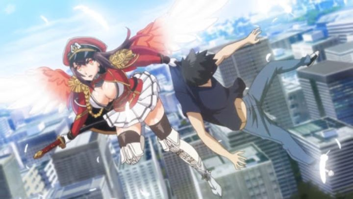

Disclaimer: This review covers the 2017 anime series "Seven Mortal Sins" (also known as "Sin: The 7 Deadly Sins") and its spinoff 2018 short series "The Seven Heavenly Virtues." It has no relation to the 2014 action anime series "The Seven Deadly Sins" by A-1 Pictures. Japanese anime is no stranger to sexualized fanservice in cartoons. It appears in shows that have no business to have it, and entire franchises exist for no other purpose. But I don't know that I've ever seen a series as raunchy as Funimation's release of "Seven Mortal Sins," a 2017 franchise based on, of all things, a series of figurines and manga by Hobby Japan. Not only did the show get a physical release in America, it got an English dub to boot, despite, by any measure, having little merit to justify a release, and being controversal enough to just cause more problems than it's worth. Of course, it was never popular enough to get much real attention from viewers, good or bad. "Seven Mortal Sins" also suffers from being a difficult series to Google. It's title is generic, and easily gets confused with "The Seven Deadly Sins," a completely unrelated and more family-friendly anime that released just a few years prior. If you managed to find this review online, congrats, you win a prize. The premise of the show is loosely based around the reglious tale of Lucifer and his fall from Heaven into Hell. Except it's a girl this time, since girl's have boobs. And the fall takes place during a time when the human race has smartphones. Anyway, Lucifer's decent is due to her pridefullness, and she declares herself the "Demon Lord of Pride," to take her place among "The Seven Deadly Sins," consisting of female personifications of Wrath, Sloth, Greed, Lust, and the rest. This leads to a war where Lucifer challenges each of the seven girls, one by one. On her side are a demon who wants to be acknowledged as the Demon of Envy, and a human girl who mysteriously has the power to see angels and devils. You might notice that there's technically nine sins here instead of seven... yeah, the series takes a lot of creative liberties, sometimes intentionally (knowing which two don't belong hints at their fate). That story summarizes not just the first episode or overall premise, but basically the entire detail of the series. Yes, the story is paper thin, right up until the final couple episodes when backstories and motivations are finally revealed. Until then, there's nonstop sexy stuff on screen from the all-female cast. This includes groping above and below, under shirts and under underwear. Fondling and licking bare nipples. Crotch-shots of characters wearing nothing by a bandaid. Tentacles. Rape and torture. In every episode. Barely a minute goes by without a screenshot or video clip that would excite a teenager. In some shots, figures and one-drawn-line away from displaying X-rated genitalia. It sounds like potentially dark and heavy stuff, especially with Hell and demons as a backstory. But the characters are so one-dimensional that it didn't feel as gross as it should have. The show doesn't take itself seriously, and neither would any viewer. This is a double-edged sword: for example, Lucifer, the protagonist and anti-hero, has virtually no personality at all, claiming to simply "do as she pleases," with no clear plan or overall goal, and without any trait to make someone root for her. Or even remember her. Despite having elements of action, comedy, drama and horror, so few of the genres are executed enough for one to categorize "Seven Mortal Sins" as anything other than "fantasy" and "erotic fan-service fest." But does it at least do that correctly? Depending on your taste, the show is arguably successful as soft-core porn, with little "story" filler in between scenes to annoy horny viewers. If that's what you're looking for, there aren't many anime I can think of with this much... content. Even real hentai-porn doesn't have this much material. The series might be at its most fun in the middle, when Lucifer goes on a international trip to visit each of the Lords of Sin where they reside among the humans in plain sight (Lust is among beach goers in Miami, Greed is running a shop in Europe, etc.). It's in these moments, outside of Hell and when God and Heaven aren't part of the convesation, that the show clearly doesn't take itself too seriously, to its benefit. Episode 5 might be the best, where one Sin speaks entirely with rapping and rhymes, challenging Lucifer to a sing-off. Another episode takes place in an online video game. It's nonsensical and doesn't have any rules or reason, but that's when there's some semblance of a personality in the series to latch onto.  Visually, "Seven Mortal Sins" looks decent, being a relatively recent anime. Background citiyscapes are detailed and well-rendered. Character designs are fantastical, and it's easy to imagine them inspiring cool figurines (or vice-versa). But those designs are a little too detailed, and don't translate as well to animation. Poor directing choices relies heavily on extreme close-ups (faces, chest, bum, repeat), such that it can be difficult to follow what's going on in any moment. Basically, there is some ambition here in the production values, but it's as mediocre as one would expect for the genre. I mentioned Funimation prepared an English dub for the show. Like the overall production, it's inspired, but some bad choices ruin the result. Bizarrely, a handful of characters have thick accents: one is French (I think), and the Lord of Vanity, the big bad and eldest Sin, sounds like a saloon-owner from the Southern states of the USA. Beyond those two, the rest of the cast is standard, so this choice, strange as it was already, was inconsistent and lacking committment. The English actors also sound older overall, darker and more demonic, compared to the Japanese actors, who sound much younger and whistful. Hearing the two, I felt like the English version didn't match well with the real tone for the show, and it was easier to watch the series with the Japanese dub, which is rare for me. It's fun to switch back to English at times though (again, Episode 5 has a fun rap battle, complete with English-translated lyrics). To complete the ambition of a larger franchise, each episode notably has a unique insert-J-Pop song, in addition to the hardcore-sounding opening and ending themes. But again, these were so out of place that their inclusion was confusing, and the overall soundtrack wasn't great either. This seems to be a consistent flaw in "Seven Mortal Sins": it's not just a blatant cash-grab with breasts on the cover, but one with half-hearted ambitions that don't work. Despite Funimation releasing the main series, it must have not sold well, because Sentai Filmworks proceeded to license the spin-off short series "The Seven Heavenly Virtues." They too gave an English dub and physical release... to a short series that totals less than an hour of content, another rare and bizarre business decision. It was animated by a completely different studio too (Bridge, not Artland). Few anime fans would have heard of either show, let alone realize that the two were related.Briefly, I'll say that "Heavenly Virtues" can be watched entirely without 'Mortal Sins," with no shared cast to closely tie them. The tone of the two are also completely different, with "Virtues" leaning much more to slice-of-life comedy as the angels seek out and train human candidates to be the next Messiah, to no avail. Production values are less ambitious, but counter-intuitively, makes the show look slightly better, and the English dub has a similar result, mundane but not distracting (except for the few instances when characters do overlap, and different actors are used). Overall, it's a sexy, more fun, and sometimes gross diversion, but even more so than "Sins," I had a lot of questions as to why it existed in the first place. I know that sex sells, and sales of the series are probably secretly better than the average anime released in America. But "Seven Mortal Sins" is a bizarre anime to have bothered producing, let alone releasing, and will be destined to be forgotten, by any but the most dedicated followers of "culture," as the Internet meme would say. But I'm not one to judge; I watched it, after all.
- "Ani" More reviews can be found at : https://2danicritic.github.io/ Previous review: review_Seven_Days_War Next review: review_She_and_Her_Cat_-_Everything_Flows